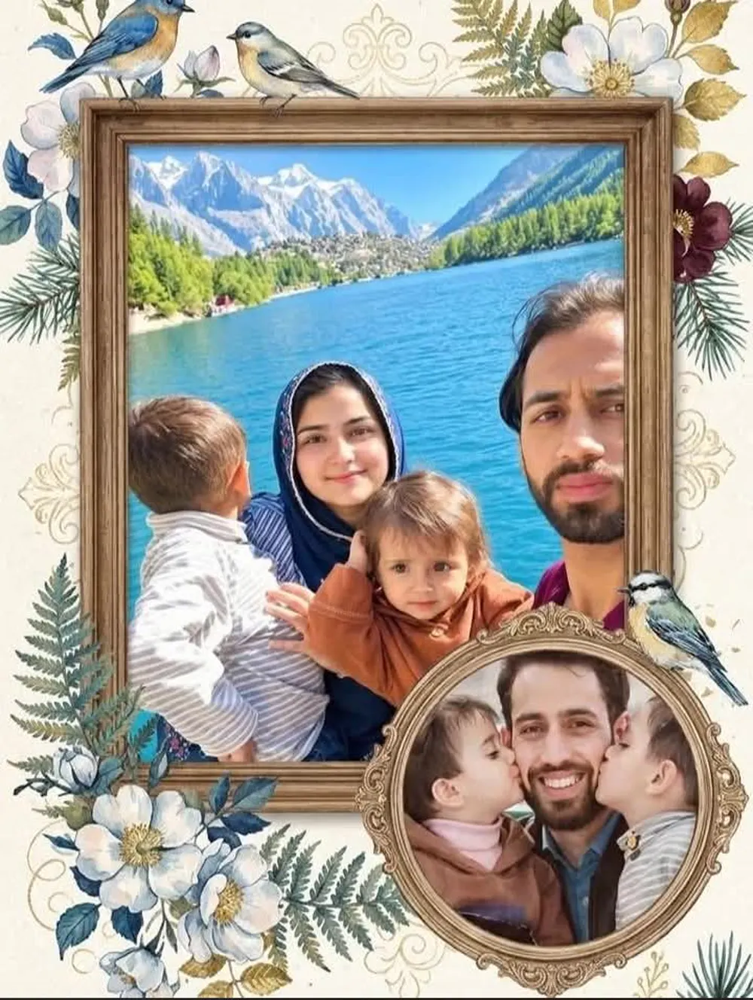

The Skardu Tragedy — One Month On, a Family Still Waits for Justice
سانحہ سکردو — ایک ماہ گزر گیا، انصاف کب ملے گا؟
23 November 2026 · Tallu Broq Ki Awaaz

شہید محمد اسلم، ان کی اہلیہ سیدہ ہانیہ اور ان کے دو ننھے معصوم پھول جیسے بچوں کو جس سفاکانہ اور بے رحمانہ انداز میں شہید کیا گیا تھا، اس کا تصور آج بھی ہر دردِ دل رکھنے والے انسان کی روح تک کو جھنجھوڑ دیتا ہے۔ ان معصوم بچوں کی قبریں دیکھ کر انسان کا کلیجہ منہ کو آتا ہے۔ یہ ایک ایسا دلخراش سانحہ تھا جس نے پورے علاقے کو سوگ اور شدید تشویش میں مبتلا کر دیا۔
ایک ماہ گزر گیا — گرفتاری صرف ایک
اس افسوسناک واقعے کو ایک ماہ گزر چکا ہے مگر تاحال صرف ایک ہی مرکزی ملزم گرفتار ہوا ہے، جبکہ باقی ملزمان قانون کی گرفت سے باہر ہیں۔ آخر کب تک اس معصوم خاندان کے قاتل آزاد گھومتے رہیں گے؟
پیش رفت کی رپورٹ عوام کے سامنے کیوں نہیں؟
ایک ماہ گزرنے کے باوجود پولیس اب تک اس کیس میں ہونے والی پیش رفت کی کوئی جامع رپورٹ میڈیا کے سامنے کیوں پیش نہیں کر رہی؟ عوام کو یہ جاننے کا پورا حق ہے کہ تحقیقات کہاں تک پہنچی ہیں، اور باقی ملزمان کی گرفتاری میں تاخیر کی وجوہات کیا ہیں۔ آخر اس کیس میں ہونے والی پیش رفت عوام کے سامنے کیوں نہیں لائی جا رہی؟
محمد اسلم، سیدہ ہانیہ اور ان کے دو معصوم بچوں کا خون رائیگاں نہیں جانا چاہیے۔ عوام کو محض یقین دہانیاں نہیں بلکہ عملی اقدامات اور انصاف چاہیے۔
محکمۂ پولیس اور قانون نافذ کرنے والے اداروں سے عوام کا پُرزور مطالبہ ہے کہ باقی ملزمان کو جلد از جلد گرفتار کرکے قانون کے کٹہرے میں لایا جائے، اور تحقیقات کی پیش رفت باقاعدگی سے عوام کے سامنے رکھی جائے — تاکہ اس معصوم خاندان کو انصاف مل سکے۔
In English
The brutal and merciless way in which Shaheed Muhammad Aslam, his wife Syeda Hania and their two little, flower-like innocent children were martyred still shakes the soul of every person with a feeling heart. To see the graves of those innocent children is heart-wrenching. It was a tragedy that plunged the entire region into mourning and deep concern.
One month on — only one arrest
A month has passed since this sorrowful incident, yet so far only one main accused has been arrested, while the remaining accused are still beyond the reach of the law. How long will the killers of this innocent family keep roaming free?
Why is the progress report not before the public?
Despite a month having passed, why has the police still not presented any comprehensive report of the progress in this case before the media? The public has every right to know how far the investigation has reached, and what the reasons are for the delay in arresting the remaining accused. Why is the progress in this case not being brought before the public?
The blood of Muhammad Aslam, Syeda Hania and their two innocent children must not go in vain. The public does not want mere assurances — it wants practical steps and justice.
The public strongly demands of the police department and the law-enforcement institutions that the remaining accused be arrested without further delay and brought before the law, and that the progress of the investigation be placed before the public regularly — so that this innocent family may receive justice.